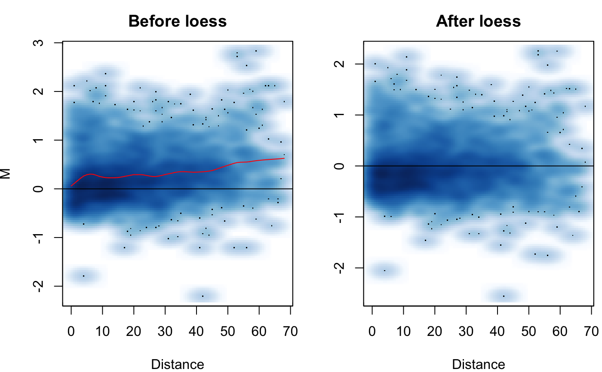

Perform joint loess normalization on two Hi-C datasets
hic_loess( hic.table, degree = 1, span = NA, loess.criterion = "gcv", Plot = FALSE, Plot.smooth = TRUE, parallel = FALSE, BP_param = bpparam() )
| hic.table | hic.table or a list of hic.tables generated from the create.hic.table function. list of hic.tables generated from the create.hic.table function. If you want to perform normalization over multiple chromosomes from each cell line at once utilizing parallel computing enter a list of hic.tables and set parallel = TRUE. |
|---|---|
| degree | Degree of polynomial to be used for loess. Options are 0, 1, 2. The default setting is degree = 1. |
| span | User set span for loess. If set to NA, the span will be selected automatically using the setting of loess.criterion. Defaults to NA so that automatic span selection is performed. If you know the span, setting it manually will significantly speed up computational time. |
| loess.criterion | Automatic span selection criterion. Can use either
'gcv' for generalized cross-validation or 'aicc' for Akaike Information
Criterion.
Span selection uses a slightly modified version of the |
| Plot | Logical, should the MD plot showing before/after loess normalization be output? Defaults to FALSE. |
| Plot.smooth | Logical, defaults to TRUE indicating the MD plot will be a smooth scatter plot. Set to FALSE for a scatter plot with discrete points. |
| parallel | Logical, set to TRUE to utilize the |
| BP_param | Parameters for BiocParallel. Defaults to bpparam(), see help for BiocParallel for more information http://bioconductor.org/packages/release/bioc/vignettes/BiocParallel/inst/doc/Introduction_To_BiocParallel.pdf |
An updated hic.table is returned with the additional columns of adj.IF1, adj.IF2 for the respective normalized IFs, an adj.M column for the adjusted M, mc for the loess correction factor, and A for the average expression value between adj.IF1 and adj.IF2.
The function takes in a hic.table or a list of hic.table objects created
with the create.hic.loess function. If you wish to perform joint
normalization on Hi-C data for multiple chromosomes use a list of hic.tables.
The process can be parallelized using the parallel
setting. The data is fist transformed into what is termed an MD plot (similar
to the MA plot/Bland-Altman plot). M is the log difference log2(x/y) between
the two datasets. D is the unit distance in the contact matrix. The MD plot can
be visualized with the Plot option. Loess regression is then
performed on the MD plot to model any biases between the two Hi-C datasets. An
adjusted IF is then calculated for each dataset along with an adjusted M.
See methods section of Stansfield & Dozmorov 2017 for more details. Note:
if you receive the warning "In simpleLoess(y, x, w, span, degree = degree,
parametric = parametric, ... :pseudoinverse used..." it should not effect
your results, however it can be avoided by manually setting the span to
a larger value using the span option.
# Create hic.table object using included Hi-C data in sparse upper # triangular matrix format data("HMEC.chr22") data("NHEK.chr22") hic.table <- create.hic.table(HMEC.chr22, NHEK.chr22, chr= 'chr22') # Plug hic.table into hic_loess() result <- hic_loess(hic.table, Plot = TRUE)#>#>#># View result result#> chr1 start1 end1 chr2 start2 end2 IF1 IF2 D #> 1: chr22 16000000 16500000 chr22 16000000 16500000 5 5.203323 0 #> 2: chr22 16000000 16500000 chr22 16500000 17000000 2 8.672206 1 #> 3: chr22 16500000 17000000 chr22 16500000 17000000 297 480.440193 0 #> 4: chr22 16000000 16500000 chr22 17000000 17500000 5 14.742750 2 #> 5: chr22 16500000 17000000 chr22 17000000 17500000 92 277.510581 1 #> --- #> 2479: chr22 49000000 49500000 chr22 51000000 51500000 21 54.634896 4 #> 2480: chr22 49500000 50000000 chr22 51000000 51500000 35 71.112086 3 #> 2481: chr22 50000000 50500000 chr22 51000000 51500000 394 339.083241 2 #> 2482: chr22 50500000 51000000 chr22 51000000 51500000 4066 2741.284207 1 #> 2483: chr22 51000000 51500000 chr22 51000000 51500000 9916 7132.021930 0 #> M adj.IF1 adj.IF2 adj.M mc A #> 1: 0.05750528 5.103586 5.097713 -0.001661128 0.05916641 5.100650 #> 2: 2.11639897 2.079392 8.341096 2.004074812 0.11232416 5.210244 #> 3: 0.69389392 303.153008 470.688840 0.634727512 0.05916641 386.920924 #> 4: 1.56000562 5.294664 13.922271 1.394783581 0.16522204 9.608468 #> 5: 1.59283701 95.652053 266.915059 1.480512855 0.11232416 181.283556 #> --- #> 2479: 1.37943338 23.009226 49.864033 1.115787132 0.26364624 36.436630 #> 2480: 1.02273986 37.747769 65.935632 0.804666919 0.21807294 51.841701 #> 2481: -0.21655615 417.219518 320.212241 -0.381778188 0.16522204 368.715880 #> 2482: -0.56875831 4227.404883 2636.620313 -0.681082463 0.11232416 3432.012598 #> 2483: -0.47544713 10121.431725 6987.265377 -0.534613540 0.05916641 8554.348551